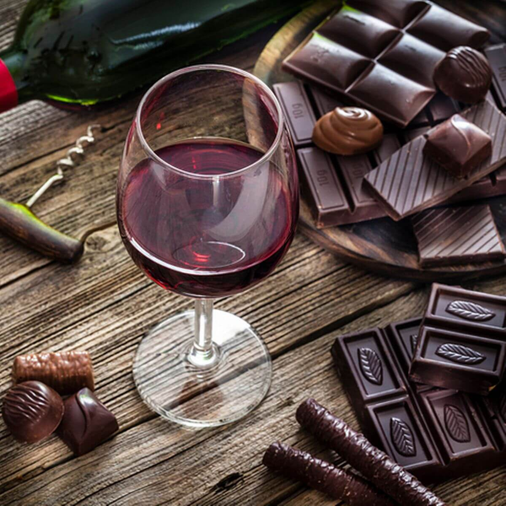
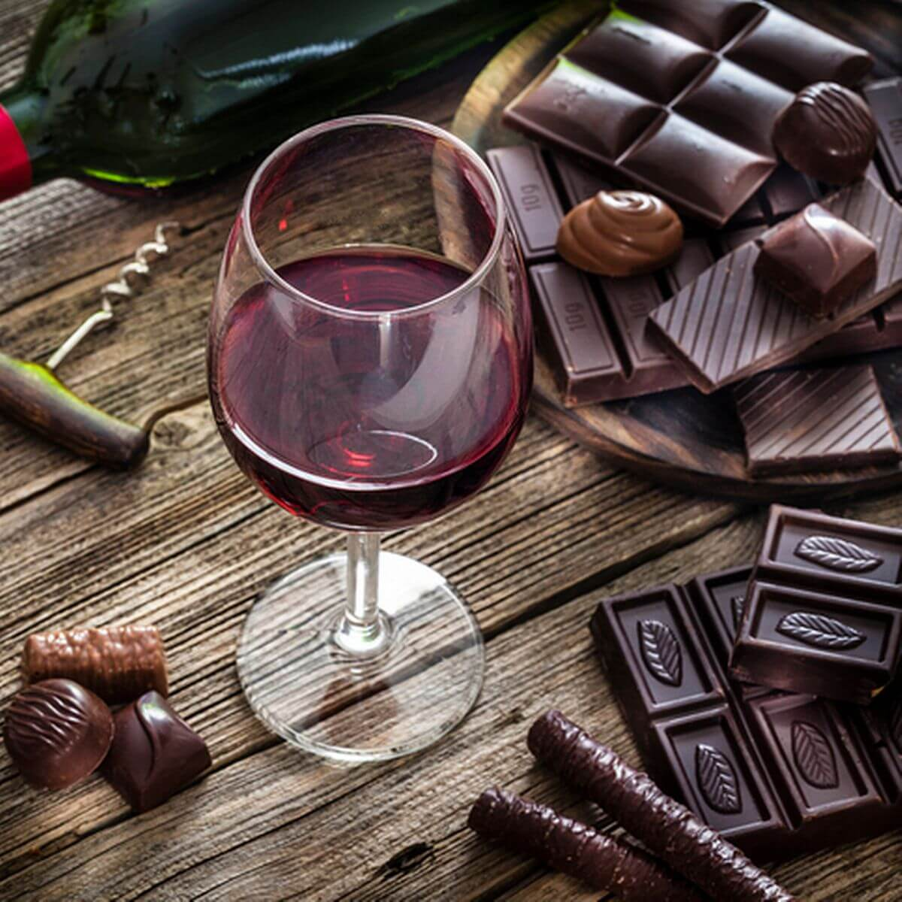

Red wine list
Menu

Exis Manolesakis
Manolesakis Estate
Moschomavro 55%, Limnio 45%
Gemaakt van de inheemse variëteiten van Limnio en Moschomavro, toont deze medium bodied wijn een complex boeket van kruisbes en bosbes van de Moschomavro-druiven; en kers, pruim met hints van kruidnagel en kaneel uit de Limnio. Fluweelzacht in de mond heeft dit een heerlijk balancerende zuurgraad en een elegante afdronk.
Drama, Greece
- Per glas: 5,50 €
- Per fles: 21,00 €
- 750 ML/ 12% ALC
 

9 Muses Red
Muses Estate
40% Mouhtaro, 40% Merlot, 20% Syrah
Heldere dieppaarse kleur. Elegant boeket met tonen van zwarte bessen, bramen, cassis, specerijen en geparfumeerde rook. In de mond is het zacht, aangenaam, fruitig met lichte hints van zwarte peper die een delicate wijn een aangename afdronk geven.
Mount Helicon, Greece
- Per glas: 6,00 €
- Per fles: 26,00 €
- 750 ML/ 12,5% ALC


Monograph
Gaia Winery
100% Agiorgitiko
Met een diepdonkere rode kleur betovert deze wijn direct het oog. Relatief complex voor zijn jeugd, biedt deze wijn een boeiende variatie aan aroma's, van cactusvijg tot granaatappel, met een vleugje butterscotch. Bijzonder zacht van smaak, kenmerkt deze wijn zich door milde tannines en een fruitige afdronk.
Peloponnesos, Greece
- Per glas: 6,50 €
- Per fles: 30,00 €
- 750 ML/ 13% ALC

Vapori
Parisis Winery
50% Xinomavro 50% Lemnio
Met een heldere dieprode kleur maakt deze wijn zijn eerste indruk. Complexiteit onthult zich in de vorm van aromatische kruiden zoals vanille, peper en kruidnagel, vergezeld door tonen van rijpe damastframboos, zongedroogde tomaten en olijven. De wijn presenteert een vol aroma, een rijke structuur en een harmonieuze zuurgraad die de smaken van vanille en damast perfect in evenwicht brengt.
Skiathos, Greece
- Per glas: 7,50 €
- Per fles: 42,00 €
- 750 ML/ 12% ALC